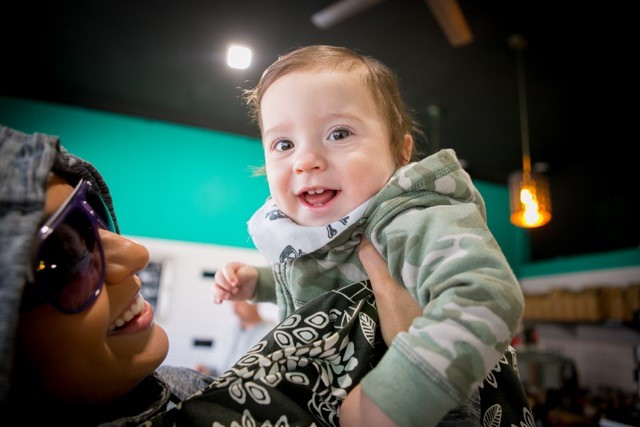
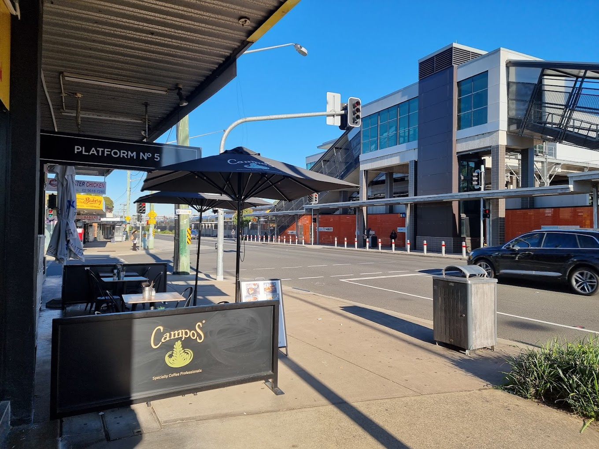
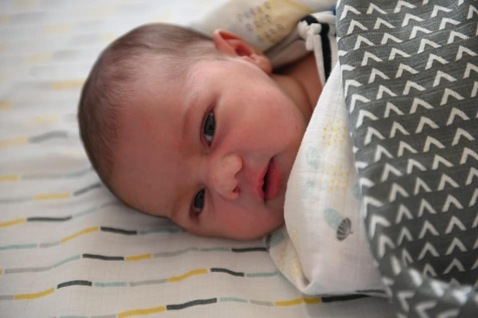

Located right across from Glenfield Station, our café has always been about bringing good coffee and good people together.
2016
Where It All Began
Platform No.5 opened its doors in June 2016, created by a passionate local named Charlie who wanted to build something special for Glenfield’s community. With a prime position by the station and a 4:30 am start, the café quickly became a go-to for early commuters craving a proper coffee and a warm breakfast.

2018
A Cafe With Heart
Serving Campos coffee and a full all-day breakfast menu, Platform No.5 built its reputation not just on great food, but on genuine hospitality. Whether it was handing out 100 free coffees on Random Acts of Kindness Day, or giving shout-outs to local heroes like firefighters and frontline workers, we’ve always believed in giving back.

2023
A New Chapter
After seven amazing years, Charlie passed the torch in late 2023, entrusting the café to new owners with the same passion and community spirit. While some directories may list us as being around since 2005, we’re proud to say our journey began right here in mid-2016, and we’ve been growing with Glenfield ever since.
2024
Still the Local Favourite
Now under new management, Platform No.5 continues to serve the locals with the same love, quality, and coffee you’ve come to expect. With over 240 glowing reviews and a 4.5/5 rating on Restaurant Guru, we’re proud to be part of your morning routine—and your memories.

2025 and beyond!
Thank you.
Whether you’re just grabbing a quick takeaway or settling in for a relaxing bite, thanks for making us part of your day.